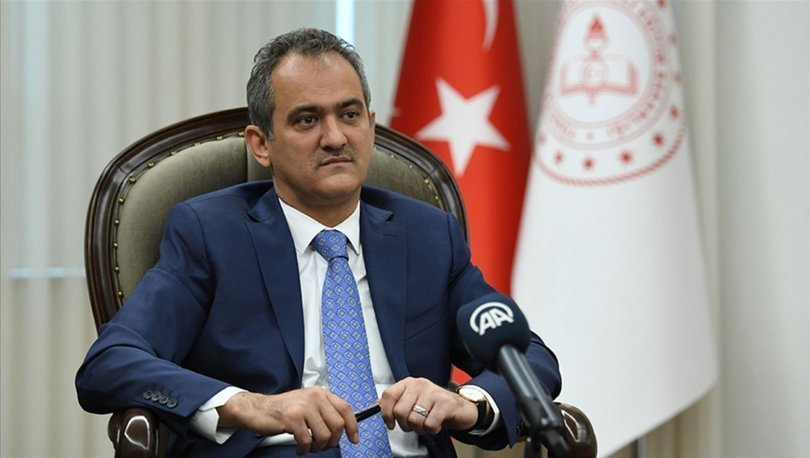

EĞİTİM
YÖK Başkanı Müjdeyi Verdi

Yükseköğretim Kurulu (YÖK) Başkanı Prof. Dr. Erol Özvar, NFT ve Blockchain ile ilgili, “Bu konu ve temaları kapsayan bölüm veya programlar tasarlıyoruz” dedi.
Bir takım ziyaretler için Eskişehir’de bulunan YÖK Başkanı Prof. Dr. Erol Özvar, Türk Dünyası Bilim, Kültür ve Sanat Merkezi’nde öğrencilerle bir araya geldi. Sohbet tadında geçen programda öğrencilerin kendilerine yönelttiği soruları cevaplayan Özvar, yeni bölümlerin ve projelerin müjdesini de verdi.
“UZAKTAN EĞİTİM, DİJİTAL DÖNÜŞÜMÜN SADECE BİR PARÇASI"
Rus Dili ve Edebiyatı Bölümü öğrencisi Alperen’in dijital dönüşümle ilgili sorusunu cevaplayan YÖK Başkanı Özvar, ciddi bir tecrübeyle birlikte olumsuzluk yaşanmadan salgın döneminin geçirildiğini belirtti. Normalde de üniversitelerde var olan uzaktan eğitimin yaygınlaştırılarak kullanım oranının arttığını belirten Özvar, “Üniversitelerimiz son 20-25 yılda fevkalade önemli adımlar attı. Dijitalleşmeyle birlikte bütün süreçleri, dijital olarak takip edebilecek programları ve yazılımları kullanmaya başladılar. Uzaktan ve açık öğretim unsuruyla eğitim öğretim, dijital dönüşümün sadece bir parçası. Çok büyük bir parçası değil. Salgın esnasında biz müfredatın bir kısmını online yapılmasını sağladık. Daha önce de online vardı, oranı yükseltmiş olduk. İyi de oldu. Eğitim öğretim aksamamış oldu. Bütün üniversitelerde uzaktan eğitim öğretim işini geliştirmeyi hedefledik. Hepimiz ciddi bir tecrübe yaşadık” dedi.
MEB, Türkçe ve Yabancı Dil Eğitimini Yeniden Şekillendirecek Çalışmalarına Hız Verdi
Milli Eğitim Bakanı Mahmut Özer, "Gelecek eğitim öğretim yılından itibaren dil eğitimini odağımıza alarak farklı mekanizmalarla, öğretim materyalleri ile güçlendirerek ve aynı zamanda ölçme değerlendirme sistemini de yeniden şekillendirerek daha iyi noktaya taşıyacağız." dedi.
Bakan Özer, AA muhabirine yaptığı açıklamada, OECD ülkelerinin öğrenci başarı araştırmalarında ağırlık verdiği üç konunun bulunduğunu, bunların matematik, fen ve dil okuryazarlığı olduğunu ifade etti.
Türkiye'de fen okuryazarlığının çok iyi aşamalara geldiğini, matematik okuryazarlığını güçlendirmeye çalıştıklarını dile getiren Özer, diğer taraftan ana dil ve yabancı dilleri öğrenmeyi kolaylaştıracak ve kalıcı kılacak, farklı yöntemler ile iyi uygulamaları bir araya getirmek üzere İstanbul'da 16-18 Mayıs'ta üç gün sürecek Dil Eğitiminde İyi Uygulamalar: Eylem Araştırması Konferansı'nı düzenleyeceklerini bildirdi.
Bakan Özer, konferansın odağı olan Türkçe ve yabancı dil eğitimine yönelik çalışmalara ilişkin şu bilgileri verdi:
"Talim ve Terbiye Kurulu Başkanlığınca organize edilen konferansta, branş öğretmenleri tarafından gerek Türkçenin yabancı dil olarak öğrenilmesi gerekse diğer dillerin öğrenilmesi, kalıcı kılınması ve sadece dilde okuryazarlık becerisinden ziyade diğer bilim dalları ile de ilişkili bir şekilde açılımlar sağlayacak iyi örnekler sunulacaktır. Konferanstan çıkacak sonuçlara göre biz, dil okuryazarlığı süreçlerimizi iyileştirmek için inşallah farklı bulgularla, yeni açılımlarla yolumuza devam edeceğiz."
Türkçede 4 dil yeterliliğinin ölçülmesine ve sınav hazırlıklarına ilişkin soru üzerine Özer, şunları kaydetti:
"Ülkemizde sadece okuduğunu anlamayı ölçen, yani tek bir dil becerisini ölçme mekanizmalarını aktif kullanan bir eğitim sistemimiz var. Aslında İngilizceden bildiğimiz gibi uluslararası değerlendirme sistemleri 4 dil becerisini, yani okuduğunu anlama, yazma, konuşma ve dinleme becerilerini ölçen, ona göre dil becerisini iyileştiren bir yapıya sahip. Milli Eğitim Bakanlığı olarak bu 4 dil becerisini ölçen bir mekanizma geliştirdik. Pilot uygulamaları tamamlandı. Kovid-19 sürecinden dolayı ara vermiştik. Şimdi onun son şekli de inşallah bitmiş olacak. Hem Talim ve Terbiye Kurulu Başkanlığının İstanbul'da yapacağı dil konferansı hem de 4 dil becerisini ölçen pilot çalışmalardan aldığımız sonuçlarla önümüzdeki eğitim öğretim yılından itibaren dil eğitimini odağımıza alarak farklı mekanizmalarla, öğretim materyalleri ile güçlendirerek ve aynı zamanda ölçme değerlendirme sistemini de yeniden şekillendirerek inşallah daha iyi noktaya taşıyacağız."
DİL EĞİTİM VE ÖĞRETİMİNE YÖNELİK 60 İYİ UYGULAMA BELİRLENDİ
Milli Eğitim Bakanlığı Talim ve Terbiye Kurulu Başkanlığı bünyesinde yürütülen ve Cumhurbaşkanlığı Yatırım Programı tarafından fonlanan Yabancı Dil Eğitiminin Geliştirilmesi (YADEG) Projesi kapsamında, "Dil Eğitiminde İyi Uygulamalar: Eylem Araştırması Konferansı" 16-18 Mayıs 2022'de İstanbul'da düzenlenecek.
Konferans ile 2021 yılı içerisinde Talim ve Terbiye Kurulu Başkanlığı tarafından Türkçeye kazandırılan Diller için Avrupa Ortak Başvuru Metni Tamamlayıcı Cilt ile uyumlu etkili dil öğretim uygulamalarının yaygınlaştırılması ve bu doğrultuda geliştirilen eğitim içeriklerinin ülke çapında tüm dil öğretmenleriyle paylaşılması amaçlanıyor.
Konferansa, dil eğitimi alanında uzman davetli konuşmacılar, sahada yaptıkları iyi uygulamalarla fark yaratan öğretmenler ve bu alanda hazırladıkları sınıf projeleriyle öğrenciler katılacak. Konferans sunumları tercihe bağlı Türkçe veya İngilizce olarak yapılacak.
Türkçenin yabancı dil olarak öğretimi ile İngilizce, Almanca, Fransızca, Arapça ve Rusça dillerinin yer aldığı en iyi 60 uygulamanın sunumlarının yapılacağı konferansta, sunumlar Bakanlığın çevrim içi platformlarına da eklenerek tüm öğretmenlerin erişimine açılacak.
MEB'den Pansiyonlardaki Öğrencilere Ev Konforu Sağlayacak Proje

Milli Eğitim Bakanlığından (MEB) yapılan yazılı açıklamada, Ortaöğretim Genel Müdürlüğüne bağlı okul pansiyonlarının öğrencilerin ihtiyaçları göz önünde bulundurularak yeniden düzenlenmesi amacıyla hazırlanan PİGEP hakkında bilgi verildi.
Açıklamada, 2022-2024 yıllarını kapsayan projenin, 166 milyon lira bütçeyle Cumhurbaşkanlığı Strateji ve Bütçe Başkanlığınca yatırım programına alındığı, bu yıl da serbest bırakılan bütçe ile pansiyonlarda iyileştirme çalışmalarına başlandığı kaydedildi.
Milli Eğitim Bakanı Mahmut Özer de projeye ilişkin yaptığı değerlendirmede, "Ortaöğretim Genel Müdürlüğümüze bağlı yaklaşık 1000 okul pansiyonunda bir standart yakalamak, öğrencilere ev ortamı sıcaklığını sunmak, pansiyonlarda yeni yaşam alanları oluşturmak, öğrencileri sanatla ve bilimle buluşturmak amacıyla Pansiyonları İyileştirme ve Geliştirme Projesi hayata geçirildi." ifadelerini kullandı.
PANSİYONLARIN FİZİKİ STANDARTLARI İYİLEŞTİRİLECEK
Öğrencilere zengin eğitim fırsatları sunarak onların bütüncül gelişimini desteklemeyi amaçladıklarının altını çizen Özer, "Pansiyonlarda iyileştirme ve geliştirme çalışmaları kapsamında bundan böyle yatakhanelerde koğuştan oda sistemine, ranzadan bazaya geçilecek. Sunduğumuz yeni imkanlarla öğrencilerimiz, metal dolap yerine iki kapaklı ahşap fonksiyonel giysi dolabı kullanabilecekler" bilgisini paylaştı.
Yemekhanelerde ise tabildot yerine porselen servis tabağı ve benmari yemek tezgahlarının kullanılacağını belirten Özer, etüt salonlarında bireysel ve grup çalışmalarının yapıldığı donanımlı alanların oluşturulacağını, bina girişlerine hijyen açısından galoşmatiklerin yerleştirileceğini ve her öğrenci için bir ayakkabı dolabı konulacağını aktardı.
PANSİYONLARDA 'SANAT VE MÜZİK ATÖLYELERİ' KURULACAK
Bakan Özer, fiziki imkanları uygun pansiyonlarda öğrencilerin becerilerini açığa çıkarmak ve keyifli zaman geçirmelerini sağlamaya dönük çalışmalara da işaret ederek, şunları kaydetti: "Pansiyonlarda 40'a yakın enstrüman ile küçük sahne konseptinin yer alacağı alanlar, öğrencilerin görsel yeteneklerini ifade edebilecekleri resim şövaleleri ve malzemelerine yer verilecek 'Sanat ve Müzik Atölyesi' kurulacak.
Öğrencilerin 3D yazıcı kullanarak teknolojik materyaller ile ürün geliştirme, yazılım, kodlama, patent ve faydalı model çalışmalarını yapabilecekleri 'Bilim Atölyesi'; öğrencilerin zeka oyunları oynayacakları, eğlenecekleri, TV izleyebilecekleri, ders dışındaki zamanlarında birlikte eğlenceli vakit geçirecekleri nezih bir ortamın sağlanacağı 'Açık Adres Köşesi' adı verilen ortak alanlar oluşturulacak."
E Okul Ne Zaman Kapanacak? 2022 MEB E-okul Karne Sorgulama ve VBS giriş Sayfası
E- okul ne zaman kapanacak sorusu son dönemde en çok araştırılan soruların başında yer alırken, e okul karne sorgulama ve VBS giriş sayfası araştırılmaya başlandı. Öğrenciler yoğunluk nedeniyle zaman zaman e- okul sistemine giriş yapamazken sayfaya erişimde güçlük yaşayabiliyor. Peki E Okul ne zaman kapanacak? İşte MEB e-okul karne sorgulama ve VBS giriş sayfası!
E OKUL NE ZAMAN KAPANACAK?
E-Okul Veli Bilgilendirme Sistemi, bakım ve onarım zamanları haricinde kesintisiz olarak hizmet vermektedir. Dönem sonlarında yaşanan yoğunluk nedeniyle girişlerde aksaklıklar yaşanabilmekte, bu durum ise öğrenciler tarafından E-Okul VBS'nin kapatıldığı şeklinde yorumlanmaktadır. E-Okul karne döneminde öğrencilerin erişimine açık olmaya devam edecek. Öğrenciler tarafından karneler için not girişinin tamamlanmasını nitelemek için kullanılan E-Okul ekranın kapanması ise artık mümkün gerçekleşmemektedir. Karne gününe kadar E Okul ekranı açık kalmaktadır.